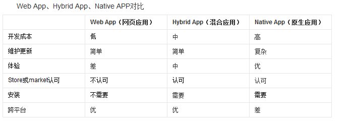
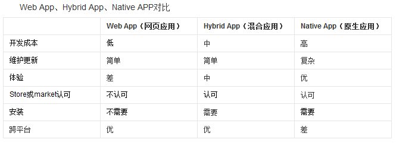

移动App第1天
什么是移动App开发【重点】
- 苹果上的软件是如何开发出来的：使用IOS平台的开发工具和开发语言进行设计开发的！苹果上的开发语言：OC、Swift
- 安卓平台上的软件又是如何开发出来的：使用Java这么语言，结合一些Android控件，就可以开发安卓上的手机软件；
- 苹果和安卓平台上共有的软件是如何开发出来的：招聘两部分的开发人员，分别是苹果开发人员和安卓开发人员；
- 现在，我们可以使用混合App开发的方式，来同时进行两个平台上软件的开发；
- 也就是说，抛开OC、Swift、Java、Android；可以直接使用前端技术（HTML + CSS + JS）来进行移动端App开发；这种开发方式叫做混合App开发！
什么是移动App开发：通俗的理解，就是把开发Web网站的技术，通过某种方式，移植到移动App开发上进行使用，这种利用Web开发技术进行移动端开发体验的方式，叫做混合App开发！
关于移动App开发，需要知道的几个概念：
- 原生开发：是使用手机平台官方推荐的开发语言和框架，进行开发的方式，叫做原生开发！
- 混合开发：抛开官方提供的开发方式，使用前端技术，进行移动APP开发的方式，叫做混合开发！
- App的分类：App -> Application(应用程序)：什么是应用程序：可以安装的、提供了某些具体功能的软件，叫做应用程序；
- 按照平台来划分：
- PC端：LOL、VS Code、网易云音乐、视频软件
- 移动端：手机QQ、外卖、地图【战略资源】、亡者农药
- 按照功能来划分：
- 游戏：亡者农药、英雄联盟
- 应用：Office办公软件、翻译软件、外卖软件
- 按照平台来划分：
- App和Web的区别：
- APP：App是Application的缩写，含义为：“可安装的应用程序”，特点：需要安装；需要手动去升级；
- 优点：性能稳定、体验好；内容丰富；安全；对网络要求比较低（受网络影响小）；
- 缺点：需要手动安装；需要手动去升级；不能跨平台
- Web：特指基于浏览器开发的网站（说白了就是运行在浏览器中的网页）
- 优点：免安装，只要安装了浏览器就能访问Web；不需要用户手动升级（升级过程对用户来说是透明的）；能够跨平台；（因为Web天生就是跨平台的）
- 缺点：严重依赖于网络的情况；用户体验没有App优秀；也有平台之间的兼容性！
- APP：App是Application的缩写，含义为：“可安装的应用程序”，特点：需要安装；需要手动去升级；
为什么要学混合App开发
从程序员的角度分析：
- 挣钱多【知识多且杂】
- 对于找工作来说：市场需求量大，好找工作，提高我们的行业竞争力
- 能接触到前端流行的技术和框架 ES6 React
- 前端是一个永恒的行业???【前端是基于 浏览器，只是行业要求变高了而已；】
- 屌丝的崛起之路：
只能做页面->Ajax前后台数据交互->Jquery、Bootstrap->前端的框架兴起->可以做手机混合App/桌面应用->可以做手机原生App->将来或许可以发射火箭发射卫星发射导弹->终极目标：统一全宇宙
- 能购置一批牛逼的设备【第一件事：发朋友圈】
从企业的角度分析:(选择合适自身的移动App开发方式)【重点】
- 节省开发成本
- 从工资上
- 从时间上:使用前端技术开发App的话，速度很快，因为前端技术够简单（HTML+CSS+JS），但是原生的 安卓和 IOS 语言就很难学，其次，一些复杂的概念比较难懂，
- 市面上常见的App开发方式
- WebApp：基于浏览器实现的，有特定功能的网站，称作WebApp（本质就是一个网站，只不过功能很复杂，所以把它叫做 Web 类型的 APP）
- 例如：百度脑图、https://m.jd.com/、https://m.taobao.com/#index
- 优点：跨平台（最大的优点）
- 缺点：依赖网络，有白屏效果，相对来说，用户体验差；不能调用硬件底层得设备，比如摄像头；
- NativeApp：用android和Object-C等原生语言开发的应用
- 优点：体验好；用户使用起来很流畅；非常适合做游戏【性能高】；可以直接调用硬件底层的API；
- 缺点：不能跨平台
- HybirdApp：利用前端所学的知识去开发移动端App，兼具2者的优势
- 优点：能够跨平台；体验会好一些；能够调用硬件底层API；
- 缺点：相对于原生体验稍微弱一丢丢；不适合做游戏；
- 混合App适合做应用类型得App，比如外卖，比如非游戏类型得软件；
- 混合APP开发的特点：外层用原生的NativeContainer来包裹所有的应用程序代码；同时这个NativeContainer也提供了调用硬件底层API的能力；注意：在NatvieContainer中，运行的不是原生的机器码，而是我们的HTML + CSS + JS搭建的出来的网页；
- WebApp：基于浏览器实现的，有特定功能的网站，称作WebApp（本质就是一个网站，只不过功能很复杂，所以把它叫做 Web 类型的 APP）
- 三种开发方式的原理和对比
 
 - 谁在使用React Native？？？
企业如何选择合适自己的App开发方式
如果企业中之前有用原生开发出来的App，那么需要继续使用原生的方式去维护； 如果企业是做手游的，也只能使用原生，或者，对app性能要求特别高，也要用原生； 一般，如果有了一个好的方案，就需要立即把方案实现为具体的应用；快速的推向市场，占领市场；基于这种需求，混合APP开发方式，更适合；尤其适用于小企业；【裤衩开发】
企业中项目开发流程
- 需求调研：产品定位、受众群体、市场需求、开发价值；【产出物：需求文档】
- 产品设计：功能模块、流程逻辑；【产出物：设计文档，交互稿】，确定项目的基本功能；
- 项目开发：项目架构、美工、前端、后台、测试【产品的把控】要理解前后端分离的概念
- 运营维护：上线试运行、调Bug、微调功能模块、产品迭代
根据需求搞设计，根据设计做开发
企业技术选型 - 几大主流技术之间的关系
- Angular.js 和 Ionic
- Vue.js 和 Weex
- React.js 和 React-Native
Angular, Vue, React 这三个都是前端框架，我们在进行混合App开发的时候，只是用到了这三个框架的基础语法而已； Ionic， Weex， ReactNatvie 这三个都是打包工具，能够把我们开发出来的应用，最终打包成一个可安装的手机端程序安装包；同时，这三个东西，也提供了好用的一些小组件；
前端混合App开发框架
- Html5+、ReactNative、Weex、Ionic
- 认识HTML5+
- h5+是一个产业联盟，它有一些互联网成员，专门在中国推广H5
- HBuilder官网
开发框架之间的区别
- Html5+ 和 Ionic
- ReactNative 和 Weex
使用HBuilder生成安卓应用（在线）
API地址 Hbuilder这个工具，是一个在线打包工具，使用很方便，不需要在本地配置开发环境；直接将做好的网站，通过一些简单的操作，就能在线打包为一个App出来；
- 在项目上右键 -> 发行 -> 发行为原生安装包
好处：本地不用配置开发环境；操作方便，对于程序员来说不关心打包的过程，打包过程对于我们来说是透明的； 缺点：程序员很少能干预打包的过程；源代码被提交到了云端的服务器，存在项目核心代码被泄露的风险；
环境变量的使用
作用：将需要全局使用的工具或者应用程序，配置到Path环境变量中，可以很方便的通过命令行的形式，在任何想要运行这些应用程序的地方，运行它们；
移动App开发环境配置【重点】
安装最新版本的java jdk
- 修改环境变量，新增
JAVA_HOME的系统环境变量，值为C:\Program Files (x86)\Java\jdk1.8.0_112，也就是安装JDK的根目录 - 修改系统环境变量
Path，在Path之后新增%JAVA_HOME%\bin;%JAVA_HOME%\jre\bin; - 新建系统环境变量
CLASSPATH，值为.;%JAVA_HOME%\lib\dt.jar;%JAVA_HOME%\lib\tools.jar; - 保存所有的系统环境变量，同时退出系统环境变量配置窗口，然后运行cmd命令行工具，输入
javac，如果能出现javac的命令选项，就表示配置成功！
安装Node.js环境
注意：需要安装最新的长期稳定版本，不要实验版本；安装完毕之后的node.js会自动配置到全局系统环境变量中
安装完毕后，可以输入node -v查看node版本号；
安装C++环境
大多数情况下操作系统自带C++环境，不需要手动安装C++环境； 如果运行报错，则需要手动安装visual studio中的C++环境；
安装Git环境
Git安装完毕后，会自动配置到系统环境变量中；
可以通过运行git --version来检查是否正确安装和配置了Git的环境变量；
安装Python环境
- 注意：安装Python时候，只能安装2.×的版本，注意勾选安装界面上的
Add Python to path，这样才能自动将Python安装到系统环境变量中； - 安装完毕之后，可以在命令行中运行
python，检查是否成功安装了python。
配置安卓环境
- 安装
installer_r24.3.4-windows.exe，最好手动选择安装到C盘下的android目录 - 打开安装的目录，将
android-25、android-23(react-native必须依赖这个)解压后，放到platforms文件夹下 - 解压并得到
platform-tools文件夹，放到安装目录的根目录中； - 【这一步直接忽略即可！】tools文件夹不解压覆盖也行；
解压tools，放到安装根目录中 - 解压
build-tools_r23.0.1-windows.zip(react-native必须依赖这个)、build-tools_r23.0.2-windows.zip(weex必须依赖这个)和build-tools_r23.0.3-windows.zip，并将解压出来的文件夹，分别改名为版本号23.0.1、23.0.2和23.0.3；在安装目录中新建文件夹build-tools，并将改名为版本号之后的文件夹，放到新创建出来的build-tools文件夹下 - 在安装目录中，新建
extras文件夹，在extras文件夹下新建android文件夹；解压m2responsitory文件夹和support文件夹，放到新建的extras -> android文件夹下 - 配置安装环境变量：在系统环境变量中新建
ANDROID_HOME，值为android SDK Manager的安装路径C:\Users\liulongbin\AppData\Local\Android\android-sdk，紧接着，在Path中新增;%ANDROID_HOME%\tools;%ANDROID_HOME%\platform-tools;
ReactNative快速打包
安装完node后建议设置npm镜像以加速后面的过程（或使用科学上网工具）。注意：不要使用cnpm！cnpm安装的模块路径比较奇怪，packager不能正常识别！
npm config set registry https://registry.npm.taobao.org --global
npm config set disturl https://npm.taobao.org/dist --globalYarn、React Native的命令行工具（react-native-cli）
Yarn是Facebook提供的替代npm的工具，可以加速node模块的下载。React Native的命令行工具用于执行创建、初始化、更新项目、运行打包服务（packager）等任务。
npm install -g yarn react-native-cli
安装完yarn后同理也要设置镜像源：
yarn config set registry https://registry.npm.taobao.org --global
yarn config set disturl https://npm.taobao.org/dist --global
运行
react-native init AwesomeProject创建React-Native项目- 运行
cd AwesomeProject切换到项目根目录中，运行adb devices来确保有设备连接到了电脑上 - 运行
react-native run-android打包编译安卓项目，并部署到模拟器或开发机中 - 运行上一条命令之前，要确保有设备连接到了电脑上，可以运行
adb devices查看当前接入的设备列表，打包好的文件，放到了android\app\build\outputs\apk目录下 - 入坑指南
问题1：开启悬浮框权限；
问题2：Could not get BatchedBridge, make sure your bundle is packaged correctly
解决方案：在终端中，进入到项目的根目录，执行下面这段命令行：
react-native bundle --platform android --dev false --entry-file index.android.js --bundle-output android/app/src/main/assets/index.android.bundle --assets-dest android/app/src/main/res/
运行之前，需要确保android/app/src/main/目录下有assets文件夹，如果没有，手动创建之~，再运行上面的命令；
问题3：could not connect to development server
解决方案：晃动手机，唤起设置属性窗口，点击“Dev settings”，再点击Debuug server host 出现设置ip地址窗口，填写Ip地址和端口号8081，例如192.168.1.111:8081
Weex快速打包
- 安装依赖:Weex 官方提供了 weex-toolkit 的脚手架工具来辅助开发和调试。首先，你需要最新稳定版的 Node.js 和 Weex CLi。
- 运行
npm install -g weex-toolkit安装Weex 官方提供的weex-toolkit脚手架工具到全局环境中 - 运行
weex create project-name初始化Weex项目 - 进入到项目的根目录中，打开cmd窗口，运行
weex platform add android安装android模板，首次安装模板时，等待时间较长，建议fq安装模板 - 打开
android studio中的安卓模拟器，或者将启用USB调试的真机连接到电脑上，运行weex run android，打包部署weex项目 - 部署完成，查看项目效果
总结重点
- 什么是前端移动App开发
- 市面上常见的App开发方式及优缺点
- 使用Hbuilder在线生成安卓应用
- 学会配置ReactNative开发环境
- 掌握ReactNative打包流程